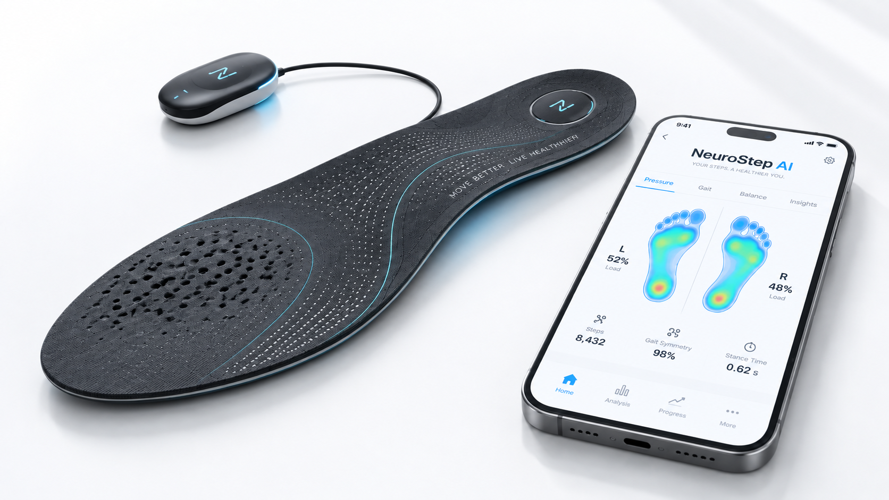

Discover what your steps reveal about your health.
Smart insole technology for personalized gait assessment, mobility monitoring, rehabilitation support, and wearable gait research.

Watch Video Demo ▶Every Step Contains Data. NeuroStep Makes It Understandable.
High-density pressure mapping and multi-axis kinetic sensors capture movement dynamics in real time.
Hover or tap metrics on the right to trigger specific foot pressure zones.
Gait Timing & Cadence
Precise measurement of stance phase, swing phase, double support ratio, and step cycle duration.
Left–Right Plantar Balance
Continuous comparison of load distribution between left and right feet during gait.
Plantar Pressure Distribution
Regional pressure monitoring across forefoot, midfoot, and heel contact points.
Gait Symmetry Index
Quantified bilateral gait symmetry metrics to observe subtle limping or compensation patterns.
Longitudinal Mobility Trends
Track progress over days, weeks, or months to observe rehabilitation response.
See NeuroStep AI in Action
Experience how our smart insoles capture, process, and visualize gait kinetics in real-time during physical movement.
Wearable Sensor Grid
High-density pressure mapping matrix embedded in ultra-thin biocompatible insoles.
100Hz Real-Time Transmission
Low-latency wireless signal streaming directly to mobile app & cloud analytics.
Automated Gait Analytics
Quantitative stance, swing, symmetry, and plantar load progression metrics.
From a Step to an Insight
Continuous kinetic sensing transforms everyday movement into actionable clinical and rehabilitation insights.
1. Wear
Slip the ultra-thin NeuroStep smart insole into standard footwear.
2. Walk
Walk naturally while multi-sensory arrays collect gait physics.
3. Measure
Capture stance timing, force vectors, and plantar pressure maps.
4. Understand
Transform high-frequency raw kinetic signals into clear mobility metrics.
5. Track
Follow gait stability, symmetry, and recovery trends over time.
One Platform. Different Mobility Needs.
Individuals & Families
Know how you really walk.
Personalized gait health baseline, early mobility change detection, and elderly mobility care.
Physiotherapists & Clinics
Support clinical expertise with measurable gait data.
Objective pre/post rehabilitation evaluation, patient progress tracking, and report generation.
Parkinson's & Neurorehabilitation
Follow gait and mobility changes over time.
Longitudinal gait rhythm, stride variability, and balance monitoring for neuro-rehab care.
Researchers & Universities
Turn every step into structured research data.
High-accuracy IMU & CoP feature analysis for biomechanics and human movement studies.
Built on Research. Designed for Real-World Mobility.
Multi-Domain CoP Feature Analysis of Functional Mobility for Parkinson's Disease Detection
IoMT–Based Smart Insole System for Comprehensive Gait Analysis & Foot Dynamics
Phase-Specific Gait Characterization and Plantar Load Progression Analysis Using Smart Insoles
Comprehensive Biomechanical Analysis of Gait Through IoMT-Based Combined IMU and COP Feature Analysis
The NeuroStep Data Pipeline
Ready to Understand Movement Differently?
For individuals, clinicians, researchers, and healthcare partners.